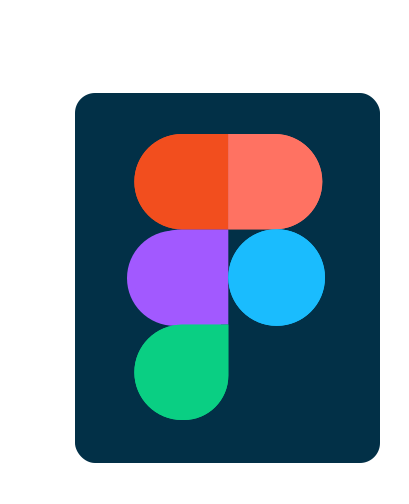
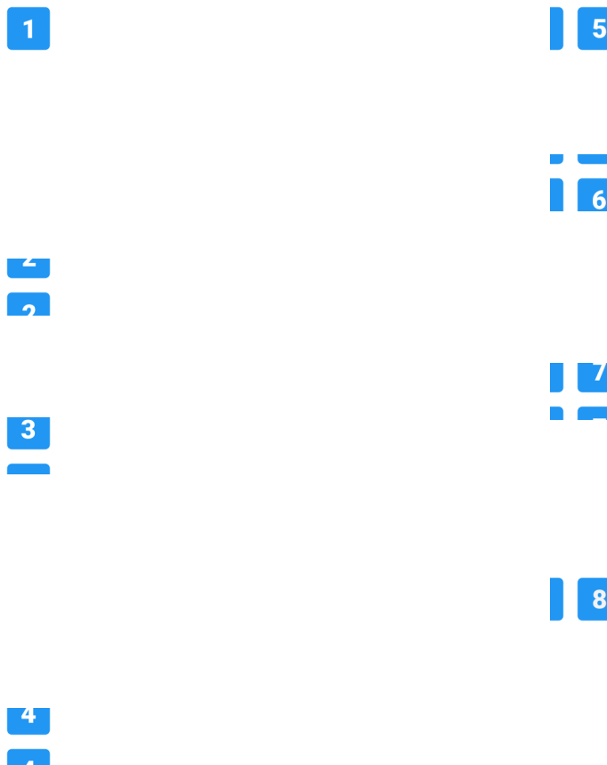

Landing
Page
Page
halaman utama ketika kita pertama kali
membuka suatu website
membuka suatu website
Yang perlu
diperhatikan
diperhatikan
CALL TO ACTION
Penggabungan dari
atau icon
atau icon
FONT YANG UNIK
DAN MUDAH DIBACA
DAN MUDAH DIBACA
Jangan menggunakan terlalu banyak
font karena membuat user akan bingung
dan juga susah untuk dibaca
font karena membuat user akan bingung
dan juga susah untuk dibaca
GUNAKAN KONTEN VISUAL
YANG MENARIK
YANG MENARIK
Kita perlu memberikan beberapa
gambar agar nantinya user akan tertarik
untuk menjelajahi website tersebut
gambar agar nantinya user akan tertarik
untuk menjelajahi website tersebut
MEMBUAT LAYOUT YANG MENARIK
Perlu mencoba untuk mengkombinasi
bullets, typography, warna, dan spacing
yang sesuai
bullets, typography, warna, dan spacing
yang sesuai
NAVIGASI YANG MUDAH
Membantu para user mengetahui konten
dari website tersebut dalam waktu yang
singkat
dari website tersebut dalam waktu yang
singkat
Prinsip
Desain Grafis

Desain Grafis
HIERARCY
Menentukan skala dan
warna dari suatu elemen
menggunakan tipografi,
ukuran dan bobot font yang
berbeda
warna dari suatu elemen
menggunakan tipografi,
ukuran dan bobot font yang
berbeda
BALANCE
Jenis balance simetris dan
asimetris
asimetris
ALIGNMENT
Bagaimana suatu teks atau
elemen garis sejajar pada
halaman dan konsisten dari
berbagai elemen serta selalu
menjadikan headlines
menjadi pusatnya
elemen garis sejajar pada
halaman dan konsisten dari
berbagai elemen serta selalu
menjadikan headlines
menjadi pusatnya
EMPHASIS
Bagian dari desain yang
menarik pengguna sebagai
poin utamanya
menarik pengguna sebagai
poin utamanya
PROPORTION
Skala atau ukuran relatif objek
dalam sebuat design
dalam sebuat design
CONTRAST
Perbedaan diantara merek yang
membuat elemen menjadi lebih
menonjol dibandingkan dengan
yang lain
membuat elemen menjadi lebih
menonjol dibandingkan dengan
yang lain
REPITITION
Pengulangan mengacu pada
penggunaan elemen yang sama
dan serupa untuk memperkuat
elemen tertentu
penggunaan elemen yang sama
dan serupa untuk memperkuat
elemen tertentu
NEGATIVE SPACE
Ruang yang tidak memiliki
elemen desain
elemen desain